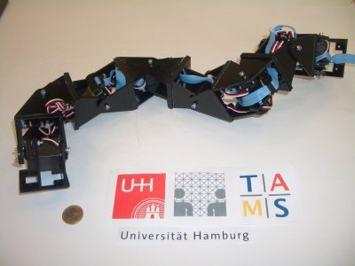

|
Paper 14: ”Locomotion Capabilities of a Modular Robot with Eight Pitch-Yaw-Connecting Modules” |
|
 |
Juan
González-Gómez, Houxiang
Zhang, Eduardo
Boemo and Jianwei
Zhang, ”Locomotion
of a Modular Robot with Eight Pitch-Yaw-Connecting Modules”,
9th International Conference on Climbing and Walking Robots.
CLAWAR06.
Brussels, September 2006.
In
this paper, a general classification of the modular robots is
proposed, based on their topology and the type of connection between
the modules. The locomotion capabilities of the sub-group of
pitch-yaw connecting robots are analyzed. Five different gaits have
been implemented and tested on a real robot composed of eight
modules. One of them, rotating, has not been previously achieved.
All gaits are implemented using a simple and elegant central pattern
generator (CPG) approach that simplify the algorithms of the
controlling system.
|
Slides: [PDF] [OpenOffice] |
|
Files for downloading |
|
hypercube-clawar06.pdf (783KB) |
Paper in PDF format |
|
hypercube-clawar06.tgz (12 MB) |
Latex sources |
|
clawar-2006-hypercube.pdf (1.5 MB) |
Slides in PDF format |
|
clawar-2006-hypercube.odp (3.6 MB) |
Slides for OpenOffice 2.0 |
The references of the paper are avaible here